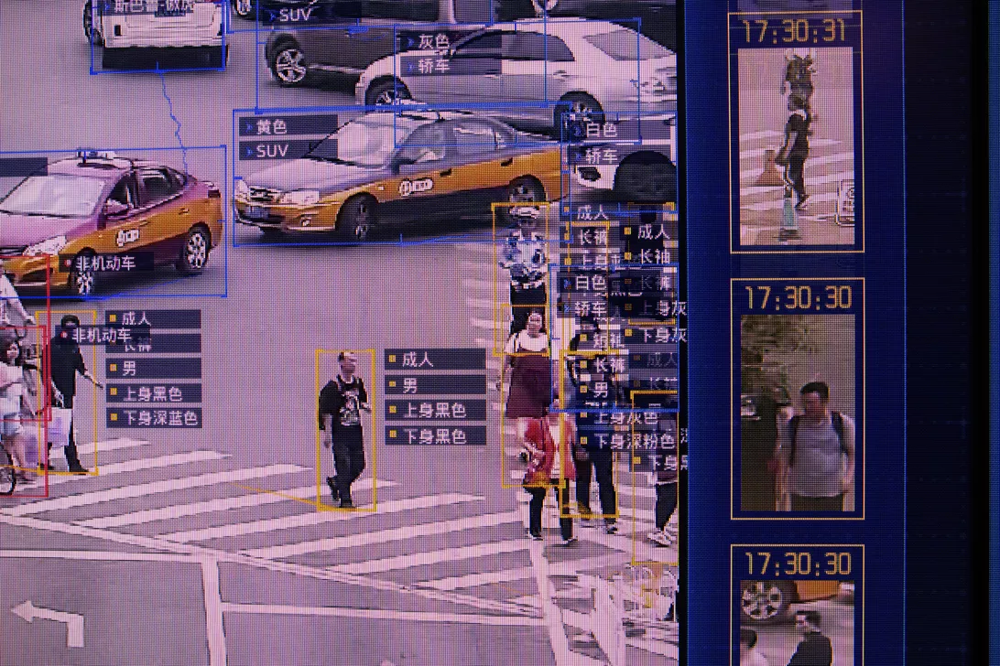

Surveillance has been around since 1942 when the Nazi occupied Germany observed the launch of long range guided ballistic missiles. Since then it has expanded into different things such as video surveillance in buildings or alleyways. The technology used for this has advanced and can now also be seen in things such as our phones with the Face ID, which scans the face of the person holding it. Technology is advancing at a rapid speed, computer processing speeds double in around 18 months (according to Moore’s law) and because of this we are able to see the risks of surveillance increasing. One example of this is the facial recognition software that is used throughout china to combat crime. They have also been accused of using this technology to commit atrocities against Uyghur muslims. There are many potentially good things that can come out of surveillance but there will always be a risk involved in it whether it develops into something bad in the future or if it gets into the wrong hands, and these risks are extreme.

Privacy is a big part of why surveillance technology is seen as taboo by the western society. With technology advancing so rapidly and society becoming more integrated with it everyday it is becoming harder to live a private life. This is because everything online is recorded and stored and all the top tech companies such as apple, Facebook and google have a lot of information about the consumers that use their product, which they or someone else can access. This can be seen in 2013 with the whistle blower Edward Snowden which exposed the harmful side of technology to the world. He exposed a government surveillance program called Prism which tapped into the servers of nine Internet companies including Apple, Facebook and Google to spy on peoples audio, video chats, photographs, emails, documents and connection logs. The goal of prism was to prevent things such as the 9/11 from happening again by surveilling the public for indication of terrorist like behaviour. The privacy of society is slowly diminishing as we become more integrated with technology as there is a way to access the information online, this is why there must be stern rules in place such as the Electronic Communications Privacy Act which extends restrictions on government wire taps, to include transmissions of electronic data by computer.
One of the risks found in surveillance is that of self-censorship. A study of the EU Data Retention Directive when individuals knows about the surveillance that is being undergone they tend to make decisions that conform to mainstream expectations. Surveillance scholars continually reaffirm that a recurrent purpose of surveillance is to control behaviour. Professor Timothy Macklem argues that “the isolating shield of privacy enables people to develop and exchange ideas, or to foster and share activities, that the presence or even awareness of other people might stifle. For better and for worse, then, privacy is sponsor and guardian to the creative and the subversive.” Minimising freedom of speech is risking the advancement of society and authenticity. Without freedom of speech not only will the actions of the individual be controlled but also the thought process. Thinking outside the box will become a taboo, which will strip humans of their unique traits. Surveillance is a way to scare people into thinking that the government is an all seeing entity making them not want to voice out their personal beliefs and instead conforming to what they think the government will like.
Surveillance systems that are operated by the wrong people can become tools for them to do harm to others. Criminal abuse is one of the types of abuse that was discovered in a police station in Washington DC, where one of the top-ranking policeman was blackmailing people. This risk can be minimised with the likes of rigorous interviews, background research and even monitoring of the person while using it. However if the “bad apple” is a higher up with more leverage it is especially hard to stop it before bad things happen.